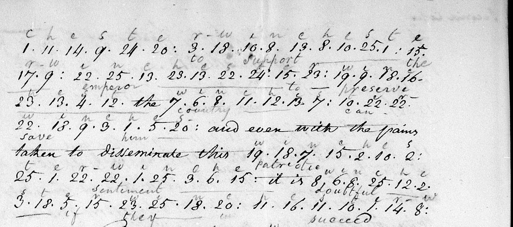
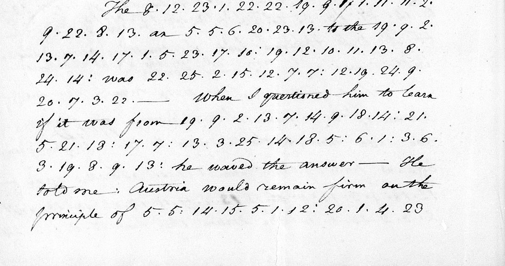

At a glanceKey from adjacent plaintext · partial (99% of the cipher)
- The letters
- William Lee, US consul at Bordeaux, to James Monroe, Secretary of State, from Paris, 1, 2 and 6 February 1813. English, with words and phrases in numerals: 123 coded stretches, 2,663 numerals.
- Where
- US National Archives, RG 59, Despatches from US Consuls in Bordeaux, microfilm T164 roll 3, frames 0099–0110 (NAID 211586337). Not on DECODE.
- The cipher
- A Vigenère-type cipher written in numerals 1–25 over a 25-letter alphabet, keyword WINCHESTER, the key started again at W for each coded stretch. Lee made many enciphering mistakes.
- How the key was found
- The clerk who deciphered the letters in 1813 pencilled the keyword letters above the numerals of 6 February. The alphabet, the numeral rule and Lee’s kinds of slip were worked out against his pencilled words, then applied to every stretch with shuffled-numeral controls.
- What it says
- France after the retreat from Russia, the fate of Barlow’s treaty, and Lee’s quarrel with the consul Warden. In the part with no decipherment on this copy: “terms of peace … offered to England if she will abandon Russia”.
- Credit
- Cipher identified, transcribed and deciphered by Andrew Beling with AI agents (pull request #397, with a follow-up in #413). The keyword and the partial decipherments are the State Department clerk’s of 1813. The project re-derived the decryption and compared part of the numerals with the frames.
- Still open
- Six numerals at the end of one stretch do not give words; a number of the new passages rest on a supposed slip of Lee’s, and four are given only as proposals; “Mr de Bassagne” is probably Desbassayns de Richemont, Napoleon’s go-between with London on the exchange of prisoners, but that is an inference. The numerals of 1 and 2 February have had one reader only.
01 The letters
William Lee (1772–1840), US consul at Bordeaux, had acted for some months as secretary to Joel Barlow, the American minister to France. Barlow died in Poland on 26 December 1812, on his way back from Vilna. Lee came to Paris, and with Barlow’s nephew Thomas Barlow and his widow Ruth disputed the charge of the legation, its papers and its cipher with David Bailie Warden, the consul at Paris. The three letters were written from the legation in those weeks.
They are not in a State Department code. On 18 February 1813 Lee wrote to Warden: “I use my own Cipher and not that of the Government, in corresponding with the Secretary of State” (certified copy, NARA T1 roll 4, frames 0347–0348).
| Date | Frames | In cipher | Decipherment of 1813 | In print |
|---|---|---|---|---|
| 1 February, “private” | 0099–0102, docket 0103 | 8 stretches, 110 numerals | none on the film (frames 0095–0115) | not in The Papers of James Monroe 6 (cited in a note) |
| 2 February, “Copy of Dispatch C” | 0106–0107 | 41 stretches, 1,097 numerals | separate sheets, frames 0104–0105, with gaps marked | Papers of James Monroe 6:366–367, from the clerk’s copy |
| 6 February, “Second Copy” | 0108–0110 | 74 stretches, 1,456 numerals | pencilled between the lines of pages 1–3 only, to the 42nd stretch | not found in print |

02 The cipher
Lee enciphers single words and phrases inside a clear letter. Each coded stretch is a run of numerals from 1 to 25 separated by dots, sometimes with a colon after a word. The alphabet has 25 letters, I and J counting as one. The keyword is WINCHESTER. A numeral n under a key letter stands for the letter n − 1 places after that key letter in the alphabet: under W, 1 is w, 2 is x, 5 is a; under I, 1 is i and 2 is k. The key starts again at W at the beginning of every stretch.
So after “The events in the north are highly” Lee wrote 8 1 6 17 10 1 1 25 5 22 11, which under W I N C H E S T E R W gives distressing.
That is the rule. Lee broke it often. Of the 123 stretches, 25 give sense only if the key position changes inside the stretch or does not start again at W: he leaves a letter out while the key moves on, uses a key letter twice, or carries the key on from the stretch before. Single wrong figures are frequent too. In the readings below, a letter supplied for one of his wrong figures is in square brackets: 59 letters are supplied and 2 dropped in the letter of 6 February, 53 and 1 in that of 2 February, none in that of 1 February.
The wrong figures are not spread evenly. The contributor’s script errors.py finds, for each stretch, the cheapest set of mistakes that turns the reading into the figures Lee wrote. Of the single wrong figures, 26 fall under the key letter W, 8.4% of the 310 figures enciphered with it, against 0.4–2.4% under I, N, H, E, S and R. Most fall where the keyword comes round to W again. Five times there Lee wrote the letter’s plain place in the alphabet (E as 5, B as 2), as if he had not applied the key. These accounts fit the numerals; they do not prove what Lee did.
The key and the tableau are in key.md.
03 6 February: France after Russia
The clerk pencilled a decipherment on the first three pages and stopped in the 42nd stretch (“depression of the nation”), of which he made out only the beginning. Before that he had given up in several places and written “(an error here)” at one. The remaining 32 stretches, 603 numerals, have no pencil on this copy. The letter is headed “Second Copy”; no other copy was looked for, so a decipherment made on another copy cannot be excluded. None was found on the film or in print.
Under the key, 27 of those 32 stretches give English with the key simply started at W; in the other five the key position changes inside the stretch or runs on from the stretch before. In the passages below the words Lee wrote in cipher are in italics, and brackets mark letters supplied for his wrong figures.
… a conscription of three hundred and fifty thousand men has been called for, and recourse has been had to forced donations of men and money … By this means a considerable army will soon be collected but it is the last effort of the nation.
The Concordat recently concluded with the Pope would have made at any other moment a good impression, but at this time i[t] is not thought of, while the [d]isco[nte]nts in some of the departments are magnifi[e]d and the exhausted stat[e] of the fina[n]ces lead to a dread of an emprunt forcé.
Terms of peace it is said have been offered to England if she will abandon Russia — A Mr de Bassagne(?) has been sent to London with proposals to that effect.
He told me: Austria would remain firm on the principle of an armed neutrality, negotiating as mediatrix. But if not, successful in thes[e] negoti[a]tio[n]s She would then join Napoleon, with one hundred thousand men — Perhaps to be indemnified at the expense of Poland.
With this force it is thought Napoleon will retrieve the losses occasioned by the severity of the climate in Russia and still be master of Europe — on this r[e]sts th[e] hopes of his court — his crown and [h]is fame.

In the part the clerk did work on, the cipher corrects him in a few places. Where he wrote “lost(?) his cause” of the King of Prussia, the numerals give left his capital fearing the app[r]oach of the Russian[s]. Where he wrote “(an error here)”, Lee had dropped a letter and gone on with the key one place ahead: the Viceroy has [hi]s headquarters at Posen.
The opening sentence is a proposal. The clerk pencilled “purpose of commerce” and stopped. If Lee used the key letter T twice and misplaced two dots between figures (and with four single wrong figures, bracketed), the sentence is: “For the pur[p]oses of [c]ommerc[e] I established with C. D. S. S. L and C. W. a [c]ipher, a copy of which I have taken means to put in your hands.” If that is right, WINCHESTER was a cipher Lee had set up for his own trade. The three sets of initials are not identified, and nothing found ties the word WINCHESTER to Lee.
04 2 February: Barlow’s treaty
The clerk deciphered most of this letter on separate sheets, and The Papers of James Monroe prints his text with his remarks (“here there is some error”, “here follows a sentence which from some error must remain in obscurity”). Seven passages are in neither the clerk’s copy nor the edition:
- the Emperor would sanction the whole treaty except that part relatin[g] to indem[n]i[t]ies;
- had Mr Barlow lived he would not only have indem[ni]ties through (a proposal; the clerk: “here there is some error”);
- thei[r] game now is to spin out the [ne]goti[a]tion[s] still farther (the sentence the clerk marked as obscure);
- that unfortunate and injudicious letter of his to Latro[b]e;
- Mr [B]arlow’s correspondence with the Dukes of Bassano and Dalberg (the clerk: “Mr Barlow’s [an error]”);
- the death of the Minister proves favorab[l]e [?to] their policy (the clerk: “favorable news [to france]”; the word before “their policy” is not clean);
- the minister’s last correspondence with the Duke of Bassano (the clerk: “communication”).
The letter reports, from Ruth Barlow and the Duke of Dalberg, that France would not grant the indemnities the United States asked for and would offer commercial advantages instead.
05 1 February: against Warden
No decipherment of this private letter was found on the film. Its eight coded passages are short and give, with no letter supplied: the Irish Brigade; the Marshal Serrurier; Barlow’s letter to Latrobe; toasts to the success of Clinton and to Emmet; and Warden’s claim that the United Irishmen in the United States form a distinct party, their influence so great that the President dares not offend. The last word rests on two numerals taken as 10 and not 16; Andrew Beling compared them on frame 0101 with Lee’s other 10s and 16s and confirmed 10.
Both letters speak of Barlow’s “unfortunate” and “injudicious” letter to Latrobe, and in both the name is in cipher, which is a check of one on the other.
06 Method and checks
The frames were located on 20 October 2026 from the source note of the 2 February letter in The Papers of James Monroe. The keyword is not a discovery of this work: it is in the clerk’s pencil. The earliest note of it in the contributor’s files is of 6 November 2026, when the 25-letter alphabet and the numeral rule reproduced two of the clerk’s pencilled words, distressing and misfortune. How the keyword was first noticed is not recorded.
The numerals were transcribed from the frame images by AI agents run by Andrew Beling. Each letter was transcribed and decoded before the clerk’s text was compared, with one stated limit: pages 1–3 of 6 February were transcribed with his pencil in view. Each stretch was decoded twice, with the key started at W and with a decoder that chooses the changes of key position by a letter 4-gram model, at a fixed cost per change set before the first run. Each stretch was also decoded 200 times with its numerals shuffled: 104 of the 123 stretches beat all 200 shuffles. Those that do not are short (5–15 numerals) or are the weak places listed in the next section. The decoder needs a corpus that is not in the repository and is not included; decode.py re-derives every line of the decryption files from the transcriptions and the stated key positions.
A second agent, without the contributor’s files, transcribed the last 32 stretches of 6 February again from the frames. It skipped one line of 14 numerals; of the 589 it did transcribe, 588 are identical. The one difference is the ninth numeral of the “Duke Dalberg” stretch, a thick re-inked 1 that the second reader took for 17 (or 11, or a blotted 1).
In a follow-up (pull request #413, 11 November 2026) another agent read the numerals of the first 42 stretches of 6 February again from the same frame halves, without the first transcription. By the contributor’s record its reading was fixed by a hash before the two were compared. It divided the stretches the same way and 837 of the 853 numerals agree. Each difference was looked at again on a crop, and the earlier transcription was kept in all but two places. One was changed: the eleventh numeral of the stretch after “Reports say that the Russians” is 8, not 3, so that it now reads “have entered Berl[i]n” with one letter supplied instead of two. On frame 0109 the 8 is the better reading of that figure, not a certain one; the clerk’s pencil under the line has “have entred Berlin”. One is left doubtful: the eleventh numeral of the stretch that gives “confidence” looks more like 13 on the image, and the word needs 10. Both readings of these pages had the clerk’s pencil in view, so neither is independent of it. The comparison was run again on integration with the same count.
On integration, 11 November 2026, the project wrote a separate decoder from the rule and confirmed that the 603 numerals give the English above; fetched frames 0108–0110 and compared about 300 numerals with the transcription at full resolution, including the line the second reader skipped, with no disagreement; and saw the clerk’s pencil stop at the 42nd stretch. The contributor’s statement that nobody deciphered the last part at the time was narrowed to what the film shows, because the letter is a second copy.
The measure: of 528 cipher words in the three readings, 426 have no supplied, dropped, guessed or unreadable letter (0.807). The letters of 2 and 6 February are classed as deciphered in part for that reason, since the project counts every word with a repaired letter as a hole. If only guessed or unreadable words are counted as holes, the share over the three letters is 0.987.
Searches for earlier work, 10–11 November 2026: Weber’s United States Diplomatic Codes and Ciphers and Masked Dispatches, Cryptiana, this repository and the web have nothing on Lee’s cipher or the keyword. Mary Lee Mann’s selection of Lee’s diary and letters (1958), searched in full, does not print the February 1813 letters or mention a cipher. The letters of 1 and 6 February are not found in print, which is not proof that they are unpublished.
07 What remains open
- Unreadable: the last six numerals of the stretch after “These addresses may” (6 February), 2 3 4 23 6 1. They give “but on” only if 2 and 3 are one numeral 23, and the page has a dot between them.
- Passages resting on a supposed slip: the readings mark these with § (in 2 February the indemnities clause, the “game” sentence, “injudicious letter”, the Bassano and Dalberg passage and three others; in 6 February eleven stretches; in 1 February “offend”). Where the supposed slip yields a long clean run of English they are firm; four are given only as proposals.
- Proposals (uncertain): “of an armed neutrality” in the Austrian paragraph of 6 February, where the numerals give OFALARMERKEUTRATITY, four letters off; “I established … a cipher, a copy” in the opening of 6 February and “indemnities through” in 2 February, each of which needs Lee’s dots between figures to be mistakes.
- Guessed from the sense: the word “to” before “their policy” in 2 February.
- “A Mr de Bassagne”: thirteen letters, exact if the key runs on from the stretch before, but too short to clear all the shuffled controls. The man is probably Philippe Panon Desbassayns de Richemont, whom Napoleon used as a go-between with London on the exchange of prisoners. That is the contributor’s inference: no source ties Lee’s words to him by name, and the works cited for it in the notes (Coquelle, Napoleon and England 1803–1813, 1904, pp. 267–69; the Bayreuther Zeitung of 1813) were not opened or checked here.
- Checking: the numerals of 1 February and 2 February have one reader each, apart from the stretches compared on the frames at integration. The first 42 stretches of 6 February have two readings, both made with the clerk’s pencil in view. No palaeographer has checked the numerals.
- The other copy: the letter is headed “Second Copy”; no other copy was looked for.
Full texts
The transcription and the decryption of every document on this page, so that the reading can be used and checked. Short files are shown here; all are in the repository.
Lee to Monroe, Paris, 1 Feb 1813 (private), T164 roll 3 frames 0099-0102, docket 0103
Lee attacks Warden's assumption of charge of the legation after Barlow's death: in cipher, the intrigues of the Irish Brigade and Marshal Sérurier on Warden's behalf, his use of Barlow's letter to Latrobe, toasts to the success of Clinton and Emmet, and his claim that the United Irishmen form a party so strong in the United States that the President dares not offend them.
Transcription
# lee1813: William Lee to James Monroe, Hotel of the Legation, Paris, 1 February 1813 ("private"), NARA RG 59, Despatches from US Consuls in Bordeaux, microfilm T164 roll 3, frames 0099-0102 (coded stretches on 0099-0101).
# No contemporary decipherment of this letter was found on the film (frames 0095-0115).
# Every coded stretch in order. For each: the clear words before it (a line without #), then the numerals exactly as
# transcribed (one line), then # lines with frame, count, doubtful numerals and notes from the transcriber.
# Numerals run 1-25. Marks kept where they were recorded: ":" a word mark or colon in Lee's hand, "|" a line or page end.
# "doubtful a:b/c" = numeral at position a read b, could be c. Struck-out numerals are excluded and noted.
# Clear text is Lee's, as on the page; "/" marks a paragraph or page break.
# Transcribed 10 Nov 2026 from full-resolution strips (8 stretches, 110 numerals). The letter is otherwise in clear (7 pages);
# only the clear text next to each coded stretch is given, read on frames 0099-0101 on 10 Nov 2026; the whole letter, read on
# frames 0099-0103, is in reading_1813-02-01.md.
But Sir, all usages, all right has been done away by the intrigues of the
13 9 22 : 16 1 : 23 25 16 3 10 8 22
# F1-A frame 0099 12 numerals
[after "and others on whom they have an immediate influence to favor the views of their champion, ..." and two pages in clear:] ... to the injury of the Government of the U States, and the prejudice of those legally authorised to exercise them by getting, it is said, the
16 18 5 16 1 22 19 : | 25 1 1 21 12 5 7 23 13
# F1-B frame 0100/0101 16 numerals
# note: crosses page turn (7 numerals on 0100 right, 9 on 0101 left); followed by "(who is a perfect old woman ...) to persuade the Duke of Bassano"
[after "(who is a perfect old woman, and in no other case would have any influence whatever) to persuade the Duke of Bassano" and more clear text:] ... He has taken infinite pains to injure the Minister by representing that unfortunate & injudicious letter to
15 18 7 15 7 23 13
# F1-C frame 0101 7 numerals
in the worst colors, and what is more, he and his friends have been drinking all winter toasts to the
22 12 16 1 23 14 1 21 2 12 | 15 1 1 17 7 9
# F1-D frame 0101 16 numerals
and their friend
9 4 25 3 12
# F1-E frame 0101 5 numerals
He represents that the
24 5 22 17 23 25 17 24 5 2 12 4 18 11
# F1-F frame 0101 14 numerals
in the U States form
5 21 22 16 12 5 21 10 15 24 5 9 7 22
# F1-G frame 0101 14 numerals
that their influence is so great
23 25 18 13 10 1 1 16 25 14 | 17 11 8 18 5 : 3 11 9 22 1 10 15 10 22 1 2
# F1-H frame 0101 26 numerals
# doubtful: 21:10/16 23:10/16
# note: numerals 21 and 23 have a small round second digit with a tick; first read at strip scale as 16, at 2x zoom closer to 10 (the clear 16 in the line above has a tall looped 6)
Sentiments unbecoming him as an officer of our Government, particularly one who has so recently sought an asylum among us. [the letter continues in clear]
# total: 8 stretches, 110 numeralsDecryption
# lee1813: decryption of William Lee to James Monroe, Hotel of the Legation, Paris, 1 February 1813 ("private"), NARA RG 59, Despatches from US Consuls in Bordeaux, microfilm T164 roll 3, frames 0099-0102 (coded stretches on 0099-0101).
# Key: keyword WINCHESTER over the 25-letter alphabet ABCDEFGHIKLMNOPQRSTUVWXYZ (I/J one letter); see key.md.
# plaintext letter = alphabet[(numeral - 1 + index(keyword[(i + offset) mod 10])) mod 25], i = 0-based position in the stretch.
# Per stretch: the numerals; "baseline" = key restarted at W for the stretch, no slip (offset 0 throughout);
# "decoder" = the offset path chosen by the phase-slip decoder (letter 4-gram model, 9.0 nats per offset change),
# with z = (score - mean of 200 shuffled-numeral controls) / sd, and whether it beats all 200 controls. The z belongs to
# the decoder's own path, whichever text is used. "used" = the path the reading rests on (baseline, decoder, or a
# hand-chosen path, stated), with the key letter under each numeral and the mechanical text, UNREPAIRED.
# "read as" = the words of reading_*.md for this stretch; [x] = letter supplied where the cipher gives a wrong letter
# or none, <x> = letter Lee enciphered in excess, dropped. Runs are "first-last:offset", positions 1-based.
F1-A frame 0099 12 numerals z 4.5 beats all controls: True decoder slips: 0
numerals 13 9 22 16 1 23 25 16 3 10 8 22
baseline IRISHBRIGADE
decoder IRISHBRIGADE [1-12:0]
used baseline [1-12:0]
key WINCHESTERWI
mech IRISHBRIGADE
read as Irish Brigade
F1-B frame 0100/0101 16 numerals z 3.4 beats all controls: True decoder slips: 0
numerals 16 18 5 16 1 22 19 25 1 1 21 12 5 7 23 13
baseline MARSHALSERRURIER
decoder MARSHALSERRURIER [1-16:0]
used baseline [1-16:0]
key WINCHESTERWINCHE
mech MARSHALSERRURIER
read as Marshal Serrurier
F1-C frame 0101 7 numerals z 0.5 beats all controls: False decoder slips: 1
numerals 15 18 7 15 7 23 13
baseline LATROBE
decoder RZLGIER [1-4:3 5-7:9]
used baseline [1-7:0]
key WINCHES
mech LATROBE
read as Latrobe
F1-D frame 0101 16 numerals z 6.0 beats all controls: True decoder slips: 0
numerals 22 12 16 1 23 14 1 21 2 12 15 1 1 17 7 9
baseline SUCCESSOFCLINTON
decoder SUCCESSOFCLINTON [1-16:0]
used baseline [1-16:0]
key WINCHESTERWINCHE
mech SUCCESSOFCLINTON
read as success of Clinton
F1-E frame 0101 5 numerals z 0.0 beats all controls: False decoder slips: 0
numerals 9 4 25 3 12
baseline EMMET
decoder LLDUE [1-5:3]
used baseline [1-5:0]
key WINCH
mech EMMET
read as Emmet
F1-F frame 0101 14 numerals z 6.0 beats all controls: True decoder slips: 0
numerals 24 5 22 17 23 25 17 24 5 2 12 4 18 11
baseline UNITEDIRISHMEN
decoder UNITEDIRISHMEN [1-14:0]
used baseline [1-14:0]
key WINCHESTERWINC
mech UNITEDIRISHMEN
read as United Irishmen
F1-G frame 0101 14 numerals z 5.2 beats all controls: True decoder slips: 0
numerals 5 21 22 16 12 5 21 10 15 24 5 9 7 22
baseline ADISTINCTPARTY
decoder ADISTINCTPARTY [1-14:0]
used baseline [1-14:0]
key WINCHESTERWINC
mech ADISTINCTPARTY
read as a distinct party
F1-H frame 0101 26 numerals z 6.8 beats all controls: True decoder slips: 1
numerals 23 25 18 13 10 1 1 16 25 14 17 11 8 18 5 3 11 9 22 1 10 15 10 22 1 2
baseline THEPRESIDENTUUMGCBARFXWYHF
decoder THEPRESIDENTDARESNOTOFFEND [1-12:0 13-26:8]
used decoder [1-12:0 13-26:8]
key WINCHESTERWIWINCHESTERWINC
mech THEPRESIDENTDARESNOTOFFEND
read as the President dares not offend
note the key restarts at W after PRESIDENT; OFFEND rests on numerals 21 and 23 read 10 (as 16: UFMEND)
# letters supplied in the reading (wrong or missing in the cipher): 0; letters dropped as excess: 0 (counted outside [?...] proposals).Reading
# William Lee to James Monroe, Paris, 1 February 1813 (private): reading ### NARA RG 59, Despatches from US Consuls in Bordeaux, T164 roll 3, frames 0099-0102, docket on 0103. Cipher: 8 passages, 110 numerals. Files: transcription_1813-02-01.txt, decryption_1813-02-01.txt, key.md. No decipherment of 1813 known; not printed. The letter is in Lee's hand, dated from the Hotel of the Legation in Paris and marked private. It runs to seven pages, nearly all in clear, with eight short passages in his cipher. No decipherment by the State Department clerk was found on the film. The whole letter is given here, with the docket. It is not the letter of the same date, wholly in clear, in which Lee regrets that he has not the cipher. ## Marks Lee's clear text is plain. Words he wrote in cipher are in italics. Bold italics mark cipher that the clerk who read these letters at the State Department did not read. A dagger † after a passage means the clerk failed or left a gap there. The sign ≠ means his wording differs from what the cipher gives. A double dagger ‡ means he never came to it. The sign § means that our reading rests on a slip we suppose Lee made with his key, or on a doubtful division of the figures: it is a proposal. A letter in square brackets inside a word is one that Lee's figures give wrongly or leave out, and we supply it. A letter in angle brackets is one he wrote in excess, and we drop it. A word in square brackets after a question mark is supplied or guessed from the sense. Three dots in square brackets mark figures not read. A question mark in round brackets marks a name or word we read but doubt. The figures and the letters they give, without any repair, are in the decryption file, passage by passage. The stops and capitals of the passages in cipher are ours. #### Examples: misfo[r]tunes (a letter supplied), o<f>f (a letter dropped), [?to] (a word guessed), [...] (figures not read), Bassagne(?) (a doubtful name). Notes on each passage: NOTES.md section 12. ## Reading private. Hotel of the Legation Paris February 1st 1813. Sir I have my consular affairs to attend to, which give me(?) Some occupation, my Commercial affairs which are of some Moment to me, the private affairs of my deceased friend to arrange, as no one else is acquainted with them, and the affairs of the Legation to put in Some order. I shall therefore run you this letter off àla hate, mixing private affairs with public ones, leaving you to select such as shall appear interesting to the President, calculating on your indulgence and the friendship you have always honored me with on which be assured no one could set a higher value. I Shall begin with Mr Warden. This Gentleman has assumed the title of Consul General I am told, at the Exterior Relations, by virtue of a Commission which he received as such from Genl Armstrong. This was necessary to his purpose, in order to take the precedence of myself and other Consuls whose Commissions are older than his, and who according to the usages of this Government, had an antecedent right to him to take charge of our affairs — But Sir, all usages, all right has been done away by the intrigues of the *Irish Brigade* and others on whom they have an immediate influence to favor the views of their champion, who by established rules can have no political or Diplomatic Character, while a Secretary of Legation, acting Secretary of Legation, private Secretary, or in short any one attached to the Legation is present. In Stating this to the Duke of Bassano, he shugged his Shoulders and Said: Que voulez vous? "there was no one present, and we were forced to Consent that Mr Warden Should a[c]t," But, Sir, the absence of the Secretaries was not the Motive for the Duke's charging Mr Warden with the Communications to be made to & from this Government. He knows that gentleman is totally unacquainted with the special & current affairs of the Legation, and that sometime would be necessary for him to get installed — The darling object therefore of procrastination could be better answered through him, than through those who are acquainted with every Stage of the Negotiation, and who though they could not to meddle with the special business of the Minister, might nevertheless, viewing the urgency of the case, press this Government to make such Communications to you on the Subject as might embarrass them. This is my firm belief, I may be wrong, but the Correspondence of Mr Warden, the last dispatches of the late Minister, and what Mr Serurier may state to you, will enable you to judge if I am correct or not in this opinion. The measures which Mr Warden has adopted to gratify his ambition, the imperious manner with which he has treated those respectable americans, who have Conversed with him on this Subject, his refusing to sign the address presented to Mrs Barlow and to wear, with all the americans, Mourning on this mournful occasion, when he ought to have reverenced his own Government by respecting the office if not the man, together with the irritating letter he has had the impudence to write to the poor disconsolate widow, has drawn upon him the Severe animadversions of all the Americans here who love their Country & respect the memory of the Deceased. The Moment the Consul for Paris heard of the death of the Minister, he Should have presented himself at this Hotel, and have put the Seals of the Consulate on the Cabinet of the deceased until the Secretary of Legation Should arrive to take charge of the publick papers, and Mrs(?) Barlow or the legal heir Should be in a situation to take charge of the private ones. This was the extent of his powers, and this Mrs Barlow says she would not have refused him permission to do; her own security and peace of mind demanded it. Instead of pursuing this line of conduct, which alone could have placed during the confusion of the family, the papers of the Legation in perfect security, he assumes instantly functions which do not belong to him, to the injury of the Government of the U States, and the prejudice of those legally authorised to exercise them by getting, it is said, the *Marshal Serrurier* (who is a perfect old woman, and in no other case would have any influence whatever) to persuade the Duke of Bassano, on the 16th January, the very day after he heard of the death of the Minister, to acknowledge him "as the only proper organ of our Government at Paris, to supply the vacancy left by the death of the Minister." He then demands of Mrs Barlow the Seals, Cipher & papers of the Legation, and asks "by what authority she opens & mutilates the dispatches of our Government," threatening at the same time to take Care," that in future no dispatches Shall fall into her hands to prevent the Secrets of the Government being known to improper persons." — This you must acknowledge, Sir is very singular language for the Consul of the U States to use on this occasion, towards those who have reason to suppose, they enjoy the Confidence of the President. Will you have us Sir, transport the papers and affairs of the Legation from a privileged house and lodge them in a house that is not privileged? will you have us place the Correspondence of the late Minister in the hands of Strangers? (and in this instance Strangers to our Country) for neither Mr Warden or his Secretary have been long enough in the U States to have been regularly and legally — Naturalized — Shall we take it from those with whom it has been deposited, who enjoyed the Confidence of the deceased & deposit it with those who did not enjoy his Confidence, and who ought not to be charged with his secrets; with one who enjoys no Consideration and who, though at the head of our Commerce in this Country, [?is] as totally ignorant of its interests as he is of the mere forms of his office. The Secretary of Legation if he consented such an Arrangement ought never again to shew his face in his Country. I cannot Sir, sufficiently Caution you against the recommendations which this man's friends will send you from this Country in his favor, and will induce his friends in ours to address you. This sort of testimony is so easily procured by those who are Strangers to delicacy that they ought to have no weight. He has taken infinite pains to injure the Minister by representing that unfortunate & injudicious letter to *Latrobe* in the worst colors, and what is more, he and his friends have been drinking all winter toasts to the *success of Clinton* and their friend *Emmet*. He represents that the *United Irishmen* in the U States form *a distinct party*, that their influence is so great *the President dares not offend*§. Sentiments unbecoming him as an officer of our Government, particularly one who has so recently sought an asylum among us. In my letter of the 30th ulto. I mentioned Mr Thos Barlow having announced himself to the Duke of Bassano as Secretary of Legation, by Stating to him he held a Commission as such from the President, and by calling to his recollection his uncle's letter on the subject, and his having presented him to His Excellency in that quality at Wilna. To this letter we have not as yet received an answer; but Mr Petry called this morning to say that Mr Barlow's application to the Duke had come too late, Mr Warden having been chosen for the purposes therein mentioned. He observed that had Mr Barlow signified his wishes on his first arrival from Wilna he would have been received and accredited. Mr Barlow, (who is not deficient in intellect and prudence) very properly answered, that the reason he did not immediately on his return, take charge of the affairs of the Legation, was his finding Mr Warden had been designated by the Duke for that purpose; that if Mr Warden's having been named by the Duke was the only reason for not accrediting him at this moment, the same reason existed on the 19th January, the day of his arrival as that Gentleman had publicly notified his acceptation by the Minister of foreign affairs on the 15th of January. We know from this visit of Mr Petry what it is to be the answer of the Duke; when it arrives, we shall answer it calmly & respectfully, and here the business must rest until we hear from you. — As this letter has been spun to a greater length than I intended, and as I have not time to Condense it, I propose touching on other matters in a Separate one. If I have been too severe against Mr Warden in this, you must attribute it to my zeal for the public Service and for the memory of the "best man I ever knew and the dearest friend I ever had." I have Sir, with the highest respect & attachment, the honor to remain Your devoted humble Servant Wm Lee [foot of p. 1] Honble James Monroe, Secy of State [docket, 0103] Mr Lee (private) Feby. 1. 1813. respecting Mr Warden. [pencil:] Mr Lee 21 Feb(?) 1813 ## Summary Lee, in Paris after the death of Joel Barlow, writes privately to Monroe against David Bailie Warden, the consul at Paris, who has taken charge of American affairs. In cipher he names the Irish Brigade and Marshal Serrurier as the means by which Warden got himself recognised. Warden has blackened Barlow's letter to Latrobe, drunk toasts to the success of Clinton and to Emmet, and claims that the United Irishmen form a distinct party in the United States, so strong that the President dares not offend them.
Lee to Monroe, Paris, 2 Feb 1813 ('Copy of Dispatch C'), T164 roll 3 frames 0106-0107 read in part
Barlow's treaty is to go before Napoleon, who would sanction it except for the indemnities the United States demands; France will spin out the negotiations and offer commercial advantages instead; Lee cites Barlow's correspondence with the Dukes of Bassano and Dalberg and cannot send a copy of the treaty.
Builds coherent sentences, but under the read bar of 95% of words read as sense (90% here); the holes are marked in the reading.
Transcription
# lee1813: William Lee to James Monroe, Paris, 2 February 1813 ("Copy of Dispatch C"), NARA RG 59, T164 roll 3, frames 0106-0107; the 1813 State Department clerk's decipherment is on frames 0104-0105.
# Printed from the clerk's decipherment, with his brackets, in The Papers of James Monroe vol. 6 (MONR-01-06-02-0283).
# Every coded stretch in order. For each: the clear words before it (a line without #), then the numerals exactly as
# transcribed (one line), then # lines with frame, count, doubtful numerals and notes from the transcriber.
# Numerals run 1-25. Marks kept where they were recorded: ":" a word mark or colon in Lee's hand, "|" a line or page end.
# "doubtful a:b/c" = numeral at position a read b, could be c. Struck-out numerals are excluded and noted.
# Clear text is Lee's, as on the page; "/" marks a paragraph or page break.
# Transcribed 6 Nov 2026 (first pass, 41 stretches, 1,098 numerals) with one source correction (Y numeral 37 = 4, not 21);
# re-read at zoom on 11 Nov 2026: J numeral 17 = 4 (was 14), Z numeral 5 = 19 (was 14), AN numeral 7 = 17 (was 7), N "9231"
# = 9 23 1 (was 9 2 3 1), giving 1,097 numerals;
# the clear words were checked on frames 0106-0107 on 10 Nov 2026 (the working file had "Mr B." for "Mrs B." and "him"/"he"
# for "her"/"she" in B, E and G; corrected here; that check changed no numeral). No Lee word marks were recorded for this letter.
Sir. I have just learnt from Mrs B. that
16 9 3 3 12 13 7
# A frame 0106 7 numerals
called yesterday & told her
23 25 14 17 12 4 13 1 13 14 5 11 12
# B frame 0106 13 numerals
# note: first digit on second line looks 4; review
was to be
15 18 22 2 20 1 14 21 13 14 23 25 18 3 5 11 13 24 10 1
# C frame 0106 20 numerals
this morning
1 25 2 6 19 25 21 21 15 8 5 11 6 3 23 9 17 1 22 22 8 11 21 24 12 4 13 1 4 23 24 24 21 17 12 4 13 4 4 23 15 22 2 4 2 15 5 21 16 20 8 5 18 16 19 9 11 1 5 23 17 9 21 18 21 21 1 23 1 15 17 5 11 3 24 10 15 25 12 7 10 23 1 1 3 12 10 17 20 25 14 16 6 22 18 2 1 1
# D frame 0106 98 numerals
# note: struck group after 23 1 excluded; a beside 21 may be mark; 25 overwritten
He asked her if she thought
13 5 17 3 5 9 17 1 5 15 22 14 2 18 4 25 10 12 5 22 22 1 6 17 23 25 22 20 23 8 24 10 14 16 2 9 3 15 22 3
# E frame 0106 40 numerals
case there would be some
8 1 19 4 2 24 3 18 15 8 13 5 16 12 5 5 21 14 15 23 5 5 14 15 10 22 21 14 1 21 9 5 7
# F frame 0106 33 numerals
She answered that it was always the
18 7 22 11 2 10 21 21 10 17 8 9 21 18 11 23 9 20 25 23 25 14 17 15 5 5 2 15 10 4 23 22 11 22 1 20 20 5 3 13 22 6 17 1 1 23 7 1 2 13 21 18 11 12 18 22 10 7 13 17 6 7 16 19 9 11 1 5 23 17 11 21 3 12 13 13 8 15 8 23 25 18 25 13 6 13 11 22 20 6 22 5 5
# G frame 0106 93 numerals
# note: struck 2 after 25 omitted; struck 8 after 23 omitted; retain ambiguous repeated 5 pending source review (deletion trial rejected)
with whom I conversed on this Subject last evening told me that the great difficulty existing in the
16 1 1 2 7 2 2 15 1 14 16 7 18 15 7 13 5 8 3 12 22 22 22 11 22 1 22 20 5 3 13 22 6
# H frame 0106 33 numerals
# note: struck 14 after 8 omitted
He stated that
10 9 14 11 21 1 5 8 14 23 18 11 1 12 15 5 21 8 14 18 23 12 14 17 2 10 21
# I frame 0106 27 numerals
# note: 15 overwritten
to subscribe to them. / My own opinion is that had Mr Barlow lived he would not only have
16 9 13 9 4 17 12 5 13 25 : 15 17 21 6 18 25 4
# J frame 0106 17 numerals
# note: re-read at zoom 11 Nov 2026: the last group is a single 4 followed by a comma (was 14); a colon after the tenth group, as Lee marks some word ends; numeral 6 is written 17, which the reading takes as 1 and 7 run together (see decryption)
but would have been able on his arrival at Paris to have made
5 3 25 12 11 15 9 20 20 3 20 22 14 17 17 18 17 1 4 15 21 18 1 1 23
# K frame 0106 25 numerals
— (page 2 begins)
2 15 1 18 24 14 10 23 9 22 4 5 2 23 6 6 13 2 9 22 2 15 3 12 22 13 25 10 2 16 10 3 13 6 1 16 12 5 19 18 2 10 21 11 21 3 10
# L frame 0107 47 numerals
# note: excluded struck second 24 after first five groups; possible struck 4 remains
— If they
22 12 12 1 23 1 12
# M frame 0107 7 numerals
in the
9 24 19 12 10 15 1 1 4 14 17 18 7 7 7 9 17 25 9 23 1 4 14 8 2 9 15 15 17 9 16 10 7 4 7 2 24 20 3 18 21 22 1 12 22 2 12 15 14 21 4 6 17 7 20 22 2
# N frame 0107 57 numerals
# doubtful: 20:23/2.3 (written "9231" with no dots, re-read at zoom 11 Nov 2026; first transcribed 2 3 1, now 23 1, which gives "now")
# note: excluded struck 2 after first 9 15
— If on the other hand
23 25 18 22 22 10 21 24 15 2 24 20 16 23 25
# O frame 0107 15 numerals
you will have it
13 5 12 12 13 13 23 21 18 14 21 8 2 12 20 15 9 16 9 18 24 10 7 7 21 1
# P frame 0107 26 numerals
— Thus you will observe that the death of the Minister
19 9 2 19 23 14 14 8 17 23 21 18 15 3 16 1 5 22 1 4 14 13 9 3 12 4 5 11 6
# Q frame 0107 29 numerals
indeed I doubt if they
21 22 20 15 23 15 2 18 22 3 9 13 18 12 12
# R frame 0107 15 numerals
in any
19 6 22 11 12 10 14 3 5 14 1
# S frame 0107 11 numerals
Such has been the impression made here but that
24 5 19 12 10 15 3 2 22 3 9
# T frame 0107 11 numerals
and
13 5 22 18 22 5 11 16 10 4 22 24 3 12 15 13 24
# U frame 0107 17 numerals
of
12 1 6 17 7 7 9 1 13 23 2 22
# V frame 0107 12 numerals
/ The
21 22 19 18 11 22 19
# W frame 0107 7 numerals
now to
5 21 25 7 12 15 16 12 11 1 9 5 16 7 8 7 13 21 2 18 7 21 18 10 6 5 2 6
# X frame 0107 28 numerals
appears very extraordinary when I have every reason to believe from
16 9 6 24 10 7 22 4 14 11 21 13 1 9 10 3 12 6 25 13 20 24 14 1 1 7 6 12 4 13 11 16 19 9 10 2 4 20 22 1 25 22 22 18 18 1 2 22 22 19 9 1 1 11
# Y frame 0107 54 numerals
# note: ; group37 corrected21→4 by source crop lee_Y_37.jpg; group3 remains6
together with his
8 22 16 9 19 13 9 1 5 23 17 10
# Z frame 0107 12 numerals
# note: numeral 5 re-read on frame 0107 on 11 Nov 2026 as 19 (first transcription 14)
and
7 6 5 15 23 14 23 21 9 13 9 5 16 3 15 5 2 15 8 14
# AA frame 0107 20 numerals
on this Subject, that it was a
19 6 22 11 12 23 18 7 8 8 21 22 18 11 15 13 11 23 14 22 14 18 3 6 15 16 12 8
# AB frame 0107 28 numerals
and had it not been so he never would have undertaken that unfortunate journey to Wilna — / It is said they intend to offer you
7 6 25 10 23 13 11 16 22 20 5 21 9 24 6 15 9 14 1 2
# AC frame 0107 20 numerals
which they
7 6 1 16 2 25 13 24 22 2 9 8 8 7 14 22 19 12 9 3 23 6 22 11 22 1 20 20 5 3 13 22 6
# AD frame 0107 33 numerals
# note: overwritten group after first 8 read 8
but the
13 5 6 17 19 23 17 18 5 3 3 6 19 24 4 7 1 2 24 17 5 9 5 24 6 3 13 19 1 22 23 10
# AE frame 0107 32 numerals
in the present
8 1 6 17 10 22 13 1 1 13 22 11 14 17 23 10 14 12 16 1 18 7 18
# AF frame 0107 23 numerals
and during our
7 6 1 17 23 14 2 4 5 3 12 24 5 3 19 15 10 24 6 3 5 1 1
# AG frame 0107 23 numerals
will not perhaps be
22 18 7 7 11 2 9 10 15 23 24 16 7 12 12 4 13 22 13 14 22 1 17 3 6 15
# AH frame 0107 26 numerals
It is possible that their adhering so strictly
23 6 7 6 23 7 17 10 1 22 7 22 6 22 11 5 13 18 5 2
# AI frame 0107 20 numerals
# note: excluded extra strokes between 11 and 5
with a view to
13 5 17 18 21 1 7 21 16 3 18 18 16 1 23 25 13 1 16 3 12 22 6 1 19 13 25 8 9 16 9 4 18 11 12 14
# AJ frame 0107 36 numerals
by thus proving that you can
12 18 9 3 6 10 11 21 8 21 9 9 16 3
# AK frame 0107 14 numerals
here without great
22 18 16 15 2 2 17 10 1 2
# AL frame 0107 10 numerals
/ I am not permitted for reasons which I have made known to you in a private letter to send you
5 20 2 13 17 10 14 14 14 23 9 18 24 12 20
# AM frame 0107 15 numerals
nor of
23 25 18 10 2 9 17 25 15 14 21 10 24 24 11 15 7 6 5 15 23 14 23 21 9 13 9 5 16 3
# AN frame 0107 30 numerals
# note: numeral 7 re-read on frame 0107 on 11 Nov 2026 as 17 (first transcription 7)
with the
8 12 23 3 7 2 10 8 14 2 5 5 2
# AO frame 0107 13 numerals
/ I am Sir with the highest respect your obedient humble Servant / Wm Lee
# total: 41 stretches, 1097 numeralsDecipherment of the time: MONR-01-06-02-0283
Decryption: decryption_1813-02-02.txt
Reading
# William Lee to James Monroe, Paris, 2 February 1813 (Copy of Dispatch C): reading ### NARA RG 59, Despatches from US Consuls in Bordeaux, T164 roll 3, frames 0106-0107; the clerk's decipherment of 1813 on frames 0104-0105. Cipher: 41 passages, 1,097 numerals. Files: transcription_1813-02-02.txt, decryption_1813-02-02.txt, key.md. Printed from the clerk's copy in The Papers of James Monroe, vol. 6, MONR-01-06-02-0283. The letter was deciphered at the State Department in 1813 on separate sheets, and the printed edition gives that copy with the clerk's notes of error. Our reading is made from the figures, not from his copy. It agrees with him wherever he read a passage, except where marked, and it reads seven passages that he could not. ## Marks Lee's clear text is plain. Words he wrote in cipher are in italics. Bold italics mark cipher that the clerk who read these letters at the State Department did not read. A dagger † after a passage means the clerk failed or left a gap there. The sign ≠ means his wording differs from what the cipher gives. A double dagger ‡ means he never came to it. The sign § means that our reading rests on a slip we suppose Lee made with his key, or on a doubtful division of the figures: it is a proposal. A letter in square brackets inside a word is one that Lee's figures give wrongly or leave out, and we supply it. A letter in angle brackets is one he wrote in excess, and we drop it. A word in square brackets after a question mark is supplied or guessed from the sense. Three dots in square brackets mark figures not read. A question mark in round brackets marks a name or word we read but doubt. The figures and the letters they give, without any repair, are in the decryption file, passage by passage. The stops and capitals of the passages in cipher are ours. #### Examples: misfo[r]tunes (a letter supplied), o<f>f (a letter dropped), [?to] (a word guessed), [...] (figures not read), Bassagne(?) (a doubtful name). Notes on each passage: NOTES.md section 12. ## Reading Copy of Dispatch C. Paris Feby 2.d 1813. Sir. I have just learnt from Mrs B. that *Mr Petry* called yesterday & told her *that the Treaty* was to be *laid before the Emperor* this morning, *who had not y[e]t seen it, and that he thought the whole of it would [b]e sanctioned* ***except that part relatin[g] to indem[n]i[t]ies***†§. He asked her if she thought *indemniti[e]s would be insisted on by us, as in [t]hat* case there would be some *difficulty in coming to an arrangement*. She answered that it was always the *opinion o[f] [he]r husband that wi<i>thout [i]ndemnities the P[r]esident wo[u]ld not sanction the Treaty. The [D]uke Dalberg* with whom I conversed on this Subject last evening told me that the great difficulty existing in the *mind of the Emperor wa[s] [th]e inde[m]nities*. He stated that *France was [n]ot now in a situation* to Subscribe to them. My own opinion is that had Mr Barlow lived he would not only have ***indem[ni]ties through***†§ but would have been able on his arrival at Paris to have made *almost any T[r]eaty with France* — ***thei[r] game now is to spin out the [ne]goti[a]tion[s] still farther***†§ — If they *su[c]ceed* in the *e[f]forts the nation is now making, they will try to dictate terms to you* — If on the other hand *they do n[o]t succe[e]d*, you will have it *in your power [t]o obtain justice* — Thus you will observe that the death of the Minister *proves favorab[l]e* ***[?to] their policy***≠§; indeed I doubt if they *regret t[h]at eve[n]t* in any *point of view*. Such has been the impression made here but that *unfortu[n]ate* and *injudicious* ***letter***†§ of ***his to Latro[b]e***†. The *refusal* now to *admit the pr[i]nciple of i[n]demnity*≠ appears very extraordinary when I have every reason to believe from *Mr [B]arlow’s* ***correspondence with the Dukes of Bassano and Dalberg***†§ together with his *declarations* and *correspondence with me* on this Subject, that it was a *point [fu]lly [a]djusted be[t]ween them*, and had it not been so he never would have undertaken that unfortunate journey to Wilna — It is said they intend to offer you *commercial advantages* — which they *consider as equivalent to indemnities*, but the *instability of all such arrangements* in the present *distra[c]ted state of Europe* and during our *contest with Great Br[i]tain* will not perhaps be *satisfacto[r]y to the President*. It is possible that their adhering so strictly *to the licence sys[t]e[m] is* with a view to *induce you to accede t[o] thes[e] arrangements*≠, by thus proving that you can *have no commerce* here without great *sacrifices*. I am not permitted for reasons which I have made known to you in a private letter to send you *a copy of [th]e Treaty*, nor of *the ministers last* ***correspondence***≠§ with the *Duke of Bassano*. I am Sir with the highest respect. your obedient humble Servant. Wm Lee [foot of p. 1] Honorable James Monroe, Secretary of State. ## Summary Lee reports, from Ruth Barlow and from the Duke of Dalberg, that the treaty Joel Barlow had negotiated was to be laid before Napoleon. The Emperor would sanction it, except the part on the indemnities the United States asked for, which France is in no situation to grant. Lee expects the French to spin out the negotiations, and thinks Barlow's death suits them. He finds the refusal of indemnities strange, since Barlow's correspondence with the Dukes of Bassano and Dalberg had settled the point. France will offer commercial advantages instead. He cannot send a copy of the treaty, nor of the minister's last correspondence with Bassano.
Lee to the Secretary of State, Paris, 6 Feb 1813 ('Second Copy'), T164 roll 3 frames 0108-0110 read in part
France after the Russian disaster: the Grand Army destroyed, discontent, conscription and forced donations as the last effort of the nation, Austria's armed neutrality and possible mediation, Prussia's king fleeing the Russians, terms of peace offered to England if she abandons Russia, and Napoleon's hopes resting on the coming campaign. The last 32 stretches carry no decipherment on this copy, and none was found.
Builds coherent sentences, but under the read bar of 95% of words read as sense (93% here); the holes are marked in the reading.
Transcription
# lee1813: William Lee to the Secretary of State (James Monroe), Hotel of the Legation, Paris, 6 February 1813 ("Second Copy"), NARA RG 59, T164 roll 3, frames 0108-0110.
# The clerk pencilled keyword letters and plaintext between the lines of pages 1-3 (to F6-42); pages 3 (lower), 4 and 5 carry no pencil.
# Every coded stretch in order. For each: the clear words before it (a line without #), then the numerals exactly as
# transcribed (one line), then # lines with frame, count, doubtful numerals and notes from the transcriber.
# Numerals run 1-25. Marks kept where they were recorded: ":" a word mark or colon in Lee's hand, "|" a line or page end.
# "doubtful a:b/c" = numeral at position a read b, could be c. Struck-out numerals are excluded and noted.
# Clear text is Lee's, as on the page; "/" marks a paragraph or page break.
# Transcribed 10 Nov 2026 from full-resolution strips (74 stretches, 1,456 numerals). F6-01 to F6-42 were read with the
# clerk's pencil in view (not blind to it); F6-43 to F6-74 carry no pencil. F6-43 to F6-74 were read a second time,
# independently, by another agent: see NOTES.md (588 of the 589 numerals it read agree; it skipped one line of 14).
# The clear text after F6-45, F6-46 and F6-72 and the closing paragraph were read on frames 0109-0110 on 10 Nov 2026.
For the
19 12 5 24 7 14 : 13 25 : 10 15 17 6 | 25 10 23 13 11 2 16 1 2 23 18 15 9 2 14 16 1 2 25
# F6-01 frame 0108 31 numerals
# doubtful: 11:17/7 29-30:1.2/12
# note: zoom: numeral 4 is clearly 24 and numeral 11 looks 17 (short 1); the last three are written 1.2.25 with a dot after the 1 (read as 1, 2, 25; if the dot is stray, 12, 25); followed by clear "with C. D. S. S. L and C. W."
with C. D. S. S. L and C. W.
5 : 1 22 13 11 25 8 24 23 | 19 16 :
# F6-02 frame 0108 11 numerals
# doubtful: 5:11/1.1
# note: zoom: numeral 5 is written 11 with no dot between the strokes; if it is two numerals 1, 1 the stretch has 12 numerals
of which I have taken means to put
13 5 : 12 12 13 13 | 16 8 9 13
# F6-03 frame 0108 10 numerals
# note: followed by a clear letter "S."
The events in the north are highly
8 1 6 17 10 | 1 1 25 5 22 11
# F6-04 frame 0108 11 numerals
I have not seen of late any English papers, but it is scarcely possible for them to
9 15 | 14 5 25 1 25 8 15 14 : 25 25 18 : 10 2 14 14 21 12 3 | 24 5 18 16 : 7 2 : 2 15 1 16 21 18 1 2 19 13 20 6 :
# F6-05 frame 0108 38 numerals
It has been
23 6 7 24 4 7 7 : 11 1 2 23 9 2 22 23 25 :
# F6-06 frame 0108 16 numerals
The best
18 23 19 7 21 1 25 25 :
# F6-07 frame 0108 8 numerals
# note: followed by clear "have either been"
have either been
23 18 23 3 6 : 10 25 : 15 22 5 9 : 21 22 3 22 : 10 14 | 13 23 8
# F6-08 frame 0108 20 numerals
# note: followed by clear "the"
the
22 22 9 3 10 5 2 6 : 10 : 15 10 11 21 | 3 : 21 7 17 19 22 3 9 :
# F6-09 frame 0108 21 numerals
(dash; new sentence)
25 22 16 12 10 25 6 :
# F6-10 frame 0108 7 numerals
# note: followed by clear "does not furnish"
does not furnish
7 5 : 14 1 21 10 3 20 15 : 23 10 10 | 8 1 1 : 22 12 16 14 10 22 11 5 1 7 16 1 : 10 22 21 | 19 18 22 5 6 :
# F6-11 frame 0108 35 numerals
# doubtful: 14:1/10
# note: numeral 14 is a 1 followed by a solid ink blob where a 0 would stand; first pass read 10 (blotted); at zoom the blob is a filled-in cancellation unlike Lee's legible overwrites, so read 1 with the second digit struck; the alternative 10 gives M for C
The effects of this
16 1 6 4 7 13 2 2 9 14 :
# F6-12 frame 0108 10 numerals
upon the
17 18 7 7 7 9 : 17 25 : 9 23 25 : 11 2 | 25 23 : 25 13 25 24 1 9 19 18 2 :
# F6-13 frame 0108 24 numerals
a general
8 1 6 1 7 9 2 12 9 3 : 19 9 18 19 19 5 19 25 :
# F6-14 frame 0108 18 numerals
# doubtful: 12:9/6
# note: numeral 12 overwritten; first pass read 6, at zoom a small 9 over an earlier stroke; 6 gives O for R
which
23 25 5 3 19 15 13 20 14 : 22 25 18 : 2 | 23 14 2 24 16 22 23 1 2 11 :
# F6-15 frame 0108 23 numerals
# note: the 22 in line 2 overwritten
of the
11 6 9 3 10 | 9 20 12 9 3 :
# F6-16 frame 0108 10 numerals
# note: the 10 overwritten
Nothing but the general impression among the leading characters, that it is
18 22 16 | 1 11 14 9 24 20 : 3 18 : 16 8 13 8 10 25 1 : 15 | 17 9 : 22 25 13 23 13 22 24 : 15 23 : 19 9 18 16 | 23 13 4 12
# F6-17 frame 0108/0109 38 numerals
# doubtful: 12:16/10
# note: zoom: numeral 1 is clearly 18, numeral 4 clearly 1, numeral 12 has the tall looped 6 (16);crosses page turn after 3 numerals; followed by clear "the"
the
7 6 8 11 12 13 7 : 10 22 22 | 22 18 9 3 1 5 20 :
# F6-18 frame 0109 17 numerals
and even with the pains taken to disseminate this
19 18 7 15 2 10 2 : | 25 1 22 22 1 25 3 6 15 :
# F6-19 frame 0109 16 numerals
it is
8 6 8 25 12 2 | 3 18 5 : 15 23 25 18 20 : 11 16 11 10 1 14 8 :
# F6-20 frame 0109 21 numerals
# note: numeral 18 corrected at zoom from first-pass 16 to 10 (round closed second digit beside the looped 6 of numeral 16); numeral 14 (20) confirmed at zoom
Austria, who it is
7 6 1 16 2 25 13 | 24 1 13 : 13 10 : 24 3 11 14 : 13 5 4 16 24 10 | 7 3 22 : 15 16 8 9 : 10 17 16 2 4 12 4 13 | 20 22 3 15 6 1 16 : 7 9 : 2 15 1 7 6 1 17 2 9 | 13 20 15 : 18 23 : 1 6 : 4 23 22 25 12 25 :
# F6-21 frame 0109 68 numerals
# doubtful: 20:16/10
# note: zoom: numeral 20 has the looped 6 (16); the 3 in line 3 overwritten; followed by clear "will"
will
19 9 : 2 4 2 15 : 22 13 15 17 13 10 : 6 17 19 15 | 13 : 12 2 3 12 1 1 5 11 15 22 : 25 15 1 13 2 | 18 : 2 22 1 11 16 14 18 25 22 : 15 7 7 18 :
# F6-22 frame 0109 46 numerals
The
5 9 16 6 : 22 16 18 12 24 17 5 9 23 3 11
# F6-23 frame 0109 15 numerals
# doubtful: 4:6/8
and
12 1 6 : 13 19 13 2 6
# F6-24 frame 0109 8 numerals
# note: followed by clear "wish it"
wish it - The
3 18 5 | 15 17 : 10 14 1 : 4 14 : 19 9 22 11 21 1 : 1 4 22 | 1 23 17 18 11 20 16 3 24 3
# F6-25 frame 0109 29 numerals
# note: the 11 in line 2 blotted
The Emperor from his attachment to his daughter is in favor
18 | 23 : 14 9 : 19 13 20 12 13 : 19 22 8 17 10 22 | 2 16 15 8
# F6-26 frame 0109 19 numerals
# doubtful: 4:9/7
# note: zoom confirms 14, 9, 19, 13, 20, 12, 13, 19, 22, 8, 17, 10, 22, 2, 16, 15, 8; a stray mark before the 9; last 22 of line 2 overwritten
and through him it is said
17 22 4 | 12 12 5 9 1 5 23 1 10 19 12 10 22 15 11 9 | 14 21 18 24 : 11 23 22 11 12 : 22 1 9 6 3 3 10 | 22 2 15 9 16
# F6-27 frame 0109 40 numerals
# note: all numerals confirmed at zoom
The Prussian Monarch has
15 22 19 17 | 1 5 1 : 10 22 24 13 11 14 9 : 24 1 9 24 5 22 11
# F6-28 frame 0109 21 numerals
# doubtful: 16:1/7
# note: numeral 16 is a 1 with a small cross-blot;followed by clear "the"
the
5 7 3 13 7 22 11 15 : 10 15 : 23 25 18 : 15 13 14 1 16 | 22 22 18
# F6-29 frame 0109 21 numerals
His dominions are
9 6 25 13 4 1 2 12 | 7 8 : 9 15 21 24 13 14 2 12
# F6-30 frame 0109 18 numerals
and
19 6 24 24 6 | 25
# F6-31 frame 0109 6 numerals
# note: crosses from page 2 to page 3
is in a
8 1 6 17 10 22 11 1 1 13 : 22 11 14 17 23
# F6-32 frame 0109 15 numerals
# doubtful: 5:10/16
# note: numeral 5: second digit level with the 1, small top hook; read 10, could be 16
from the part they have taken, having
15 6 6 17 19 | 7 19 : 10 10 22 10 1 17 3 6 24 13 16 9 : 22 5 7 2 9 23 | 10 21
# F6-33 frame 0109 27 numerals
# doubtful: 11:10/13
# note: 11 Nov 2026, blind second reading: numeral 11 looks more like 13 on the image; CONFIDENCE needs 10. Kept as 10.
The
14 1 1 5 7 2 21 8 11 20 9 10
# F6-34 frame 0109 12 numerals
has quit
23 25 18 | 15 23 8 21 8 15 23 16 11 : 21 3 : 25 13 9 20 25 : 10 21 | 4 12
# F6-35 frame 0109 23 numerals
# doubtful: 11:16/10
# note: numeral 11 smudged; read 16, could be 10
in
8 1 6 5 13 14 2
# F6-36 frame 0109 7 numerals
having it is said committed great errors, and the
25 : 1 16 3 10 10 17 : 15 22 2
# F6-37 frame 0109 10 numerals
# note: followed by clear "taken"
taken
23 25 18 : 1 7 8 20 8 9 13 :
# F6-38 frame 0109 10 numerals
and has we are told at this moment
12 6 6 23 22 12 23 16 10 21 11 18 | 15 11 : 22 2 : 22 10 2 9 5 :
# F6-39 frame 0109 21 numerals
Reports say that the Russians
12 18 9 3 23 9 2 12 13 14 8 19 18 15 4 7 21
# F6-40 frame 0109 17 numerals
# note: numeral 11 first read 3; corrected to 8 on 11 Nov 2026 after the blind second reading of F6-01 to F6-42 (NOTES.md section 8): closed lower bowl like Lee's 8, against the open 3 of 13 two places before. Gives ENTERED.
In the midst of these
8 1 6 24 11 15 13 24 14
# F6-41 frame 0109 9 numerals
and of the
11 9 18 24 12 : 25 13 22 13 14 22 10 1 2 | 11 7 2 2 15 1 22 5 11 22 12 6
# F6-42 frame 0109 26 numerals
# doubtful: 2:9? 12:10/16
# note: numeral 2 partly hidden by pencil; numeral 12 read 10 at strip scale, at zoom the second digit has a short ascender and could be 16
a conscription of three hundred and fifty thousand men has been called for, and
21 22 16 12 13 13 1 12
# F6-43 frame 0109 8 numerals
has been had
23 6 19 12 10 24 | 13 11 : 25 23 17 18 7 7 7 9 1 :
# F6-44 frame 0109 17 numerals
of
16 22 1 24 6 25 20 | 21 9 14 3
# F6-45 frame 0109 11 numerals
By this means a considerable army will soon be collected
6 12 7 7 12 5 1 1 4 14 15 18 6 17 : 23 | 2 14 21 13 3 : 18 23 7 6 23 : 9 9 1 5 23 17
# F6-46 frame 0109 31 numerals
These addresses may -
12 18 9 3 : 19 9 13 13 2 7 11 14 25 10 10 9 11 | 2 3 4 23 6 1
# F6-47 frame 0109 23 numerals
# doubtful: 18-19:2.3/23
# note: line 2 begins 2. 3. with a clear dot between (two numerals); a struck-out group (12 or 13) after numeral 6 excluded; numeral 8 (13) heavily overwritten
The nation they have
17 6 1 3 24 | 10 25 : 1 4 14 19 22 2 13 4 1 : 18 20 10 6
# F6-48 frame 0109/0110 20 numerals
# note: crosses page turn after 5 numerals
How they have
6 22 18 11 : 8 13 22 11 16 12 9 21 :
# F6-49 frame 0110 12 numerals
The Concordat recently concluded with the Pope
1 6 8 9 22 : 4 9 3 1 21 5 21 18 24 12 : 22 21 6 | 10 3 12 22 5 : 10 7 8 13 20 15
# F6-50 frame 0110 29 numerals
# note: followed by clear "a good impression,"
a good impression,
6 12 7 24 12 15 16 16 14 3 13 4 18 7 5 1 20 10 3 : | 23 25 2 18 25 4 2 : 21 2 6 12 1 24 3 :
# F6-51 frame 0110 33 numerals
# note: line 1 much corrected: numerals 4,5,6,8,9,10,11,18 overwritten; a struck-out group (12 or 22) after numeral 14 excluded; numeral 16 (1) is an insertion above the line with caret after the 5
The
10 1 | 6 1 7 9 3 22 : 1 1 16 7 8 13 : 21 2 3 12 22 17 | 3 8 22 25 1 8 14 17 11 6 :
# F6-52 frame 0110 30 numerals
# note: followed by clear "are"
are
16 18 20 11 2 2 | 17 3 25 :
# F6-53 frame 0110 9 numerals
and the
9 15 21 24 13 14 2 12 25 : 2 | 23 18 7 1 : 7 2 2 15 1 : 15 13 5 14 6 21 1 1
# F6-54 frame 0110 27 numerals
# note: followed by clear "lead to a"
lead to a
8 9 18 24 22
# F6-55 frame 0110 5 numerals
of an
9 4 3 15 13 9 2 | 13 10 1 7 22
# F6-56 frame 0110 12 numerals
These, Sir, perhaps you will say, are the
8 18 5 8 : 11 4 9 11 1 2 :
# F6-57 frame 0110 10 numerals
of the
19 1 16 17 8 13 | 13
# F6-58 frame 0110 7 numerals
yet I do not see how I can
11 1 9 3 2 15 25 | 12 7 18 9 23 :
# F6-59 frame 0110 12 numerals
(new paragraph)
23 22 5 10 11 10 14 22 1 10 7 22
# F6-60 frame 0110 12 numerals
# note: "11 10" is written above the line over "10 14" (insertion); placed here after numeral 4; followed by clear "it is said have been"
it is said have been
18 23 19 3 10 1 12 1 10 14 17 24 | 24 24 6 25 17 13 14 17 9 14 22 9 4 : 22 10 8 | 9 13 18 5 : 5 18 11 14 17 8
# F6-61 frame 0110 38 numerals
# note: numeral 13 (24) stands in the left margin before line 2 (added); a small cross between numerals 8 and 9
(dash)
22 21 21 21 | 18 25 19 14 1 8 3 22 9
# F6-62 frame 0110 13 numerals
# note: followed by clear "has been"
has been
22 22 1 17 | 12 10 : 19 21 9 13 18 5
# F6-63 frame 0110 12 numerals
# note: followed by clear "with"
with
19 9 2 13 7 14 | 9 18 14 :
# F6-64 frame 0110 9 numerals
# note: followed by clear "to that effect."
The
8 12 23 1 22 22 19 9 1 1 11 11 2 | 9 22 8 13
# F6-65 frame 0110 17 numerals
# doubtful: 8:9? 9:1/struck
# note: numeral 8 overwritten; numeral 9 is a thick 1 with a long diagonal tail running below the line; first pass took it as struck out and excluded it; at zoom it is a re-inked 1 with a pen drag, not scribbled over like the struck groups in F6-47 and F6-51, so it is kept; without it the stretch has 16 numerals
an
5 5 6 20 23 13
# F6-66 frame 0110 6 numerals
# note: followed by clear "to the"
to the
19 9 2 | 13 7 14 17 1 5 23 17 10 : 19 12 10 11 13 8 | 24 14 :
# F6-67 frame 0110 20 numerals
# note: followed by clear "was"
was
22 25 2 15 12 7 7 : 12 19 24 9 | 20 7 3 22
# F6-68 frame 0110 15 numerals
When I questioned him to learn if it was from
19 9 2 13 7 14 9 18 14 : 21 | 5 21 13 : 17 7 : 13 3 25 14 18 5 : 6 1 : 3 6 | 3 19 8 9 13 :
# F6-69 frame 0110 30 numerals
# note: followed by clear "he waved the answer"
He told me: Austria would remain firm on the principle of
5 5 : 14 15 5 1 12 : 20 1 4 23 | 9 14 9 2 15 7 : 20 1 16 18 11 22 24 12 5 21 | 14 : 22 2 : 16 22 17 7 19 15 25 16 19
# F6-70 frame 0110 39 numerals
# doubtful: 24:24/21
# note: crosses from page 4 to page 5 after 11 numerals
But if not,
22 12 16 1 23 14 1 13 16 20 : 13 5 7 6 23 | 14 12 : 20 1 16 18 11 22 18 12 5 22 21 14
# F6-71 frame 0110 29 numerals
# note: followed by clear "She would then join Napoleon, with one hundred thousand men"
Perhaps to be indemnified.
5 11 7 6 | 23 : 1 6 22 1 22 22 22 : 2 4 8 10 19 8 9 13 :
# F6-72 frame 0110 20 numerals
and still be master of Europe -
18 5 7 : 6 2 14 25 3 14 3 | 22 : 11 21 1 1 10 23 12 14 : 23 10 25 22 16 21 | 10 3 24 15 :
# F6-73 frame 0110 29 numerals
# note: numerals of line 1 confirmed at zoom (the first is 18 with a heavy 8)
(dash)
17 13 10 16 15 7 18 21 8 9 | 13 : 11 1 6 4 19 8 13
# F6-74 frame 0110 18 numerals
# note: last coded stretch; followed by the closing "I am Sir, with great respect"
/ I am Sir, with great respect Your very humble Servant / Wm Lee
# total: 74 stretches, 1456 numeralsDecryption: decryption_1813-02-06.txt
Reading
# William Lee to the Secretary of State (James Monroe), Paris, 6 February 1813 (Second Copy): reading ### NARA RG 59, Despatches from US Consuls in Bordeaux, T164 roll 3, frames 0108-0110. Cipher: 74 passages, 1,456 numerals. Files: transcription_1813-02-06.txt, decryption_1813-02-06.txt, key.md. Not printed. No full decipherment of the letter was found. The clerk at the State Department wrote the letters of the key over the figures and his reading under them in pencil on the first three pages, and stopped on the third. The last thirty-two passages carry no decipherment on this copy (it is headed "Second Copy"; no other copy was looked for). ## Marks Lee's clear text is plain. Words he wrote in cipher are in italics. Bold italics mark cipher that the clerk who read these letters at the State Department did not read. A dagger † after a passage means the clerk failed or left a gap there. The sign ≠ means his wording differs from what the cipher gives. A double dagger ‡ means he never came to it. The sign § means that our reading rests on a slip we suppose Lee made with his key, or on a doubtful division of the figures: it is a proposal. A letter in square brackets inside a word is one that Lee's figures give wrongly or leave out, and we supply it. A letter in angle brackets is one he wrote in excess, and we drop it. A word in square brackets after a question mark is supplied or guessed from the sense. Three dots in square brackets mark figures not read. A question mark in round brackets marks a name or word we read but doubt. The figures and the letters they give, without any repair, are in the decryption file, passage by passage. The stops and capitals of the passages in cipher are ours. #### Examples: misfo[r]tunes (a letter supplied), o<f>f (a letter dropped), [?to] (a word guessed), [...] (figures not read), Bassagne(?) (a doubtful name). Notes on each passage: NOTES.md section 12. ## Reading Second Copy Hotel of the Legation Paris<br> Feby 6th. 1813. Sir, For the *pur[p]oses of [c]ommerc[e]* ***I established***†§ with C. D. S. S. L and C. W. ***a [c]ipher, a copy***†§ of which I have taken means to put *in your hand*s. The events in the north are highly *distressing*. — I have not seen of late any English papers, but it is scarcely possible for them to *exaggerate [t]he misfo[r]tunes of the grand army*. — It has been *totally destroyed*. The best *officers* have either been *taken or have died off by* the *severity o<f>f the climate*. — *History* does not furnish ***[a]n account of such a disastr<c>ous campaign***†. The effects of this *misfortune* upon the *nation is no[t] to be descr[i]bed* — a General *discontent prevails* which *threatens [t]he destru[c]tion* of the *Government*. — Nothing but the general impression among the leading characters, that it is *[n]ec[e]ssary to [s]upport the Emperor to preserve* the *country can save him*, and even with the pains taken to disseminate this *patriot sen[t]iment*≠ it is *doubtful if the[y] succeed*. Austria, who it is *considered is less exh[a]usted than any of the nat[i]ons on the continent,* ***it is feared***†§ will *profit of this state [o]f things to strike [a] decisive b[l]ow*. The *Arch Duke Char[l]es* and *his party* wish it — The *[p]ar[t]y of the Prince Swartzenb[o]urg*. The Emperor from his attachment to his daughter is in favor ***[?of an armed neutrality]***†§ and through him it is said *ne[g]otiatio[n]s* ***for a g[e]neral [p]eace are operat[i]ng***†. The Prussian Monarch has *left his capital fearing*≠ the ***app[r]oach of the Russian[s]***†. His dominions are *[c]ompletely exhauste[d]* and *Poland* is in a *distracted state* from the part they have taken, having *lost all confidence in Napoleon*. The *King of Naples* has quit *the remna[n]t o[f] the grand army* in *disgust* having it is said committed great errors, and the *Vicero[y] has* taken *the command* and has we are told at this moment ***[hi]s headquarters at Posen***†§. Reports say that the Russians *have entered Berl[i]n*. In the midst of these *disasters* and of the *great* ***depression of the nation***†§ a conscription of three hundred and fifty thousand men has been called for, and ***recourse***‡ has been had ***to forced donations***‡ of ***men and money***‡ — Fifty thousand horse are to be raised by each town furnishing its quota, in proportion to its population and wealth, thus Paris furnishes five hundred Lyons one hundred & twenty Bordeaux Eighty and so on. By this means a considerable army will soon be collected ***but it is the last effort of the nation***‡ — We must therefore look for something very decisive in the course of the Summer months. The papers I have sent you will give you the account of the formation of the Regency, and furnish you with most of the addresses to the throne from different parts of the Empire These addresses may ***have an eff[e]ct abroad [?but on]***‡§ The nation they have ***none, for the people know***‡ How they have ***been produced***‡. The Concordat recently concluded with the Pope ***would have made at any other moment***‡ a good impression, ***but at this time i[t] is not thought of, while***‡§ The ***[d]isco[nte]nts in some of the departments***‡§ are ***magnifi[e]d***‡ and the ***exhausted stat[e] of the fina[n]ces***‡ lead to a ***dread***‡ of an ***emprunt forcé***‡. These, Sir, perhaps you will say, are the ***dark shades***‡ of the ***pict[u]re***‡ yet I do not see how I can ***give it relief***‡. ***Terms of peace***‡ it is said have been ***offered to England if she will abandon Russia***‡ — ***A Mr de Bassagne(?)***‡§ has been ***sent to London***‡ with ***proposals***‡ to that effect. The ***Duk[e] Dalberg told me***‡ an ***answer***‡ to the ***propositions for peace***‡ was ***shortly expected***‡ — When I questioned him to learn if it was from ***proposals mad[e] to Russia o[r] England***‡ he waved the answer — He told me: Austria would remain firm on the principle of ***an armed neutrality, negotiating as mediatrix***‡. But if not, ***successful in thes[e] negoti[a]tio[n]s***‡ She would then join Napoleon, with one hundred thousand men — Perhaps to be indemnified ***at the expense of Poland***‡. Part of the new levies are to be distributed about in the Garrisons, and military positions and the veterans are to be drawn from thence, thus one hundred & twenty thousand old troops will be joined to part of the new ones, which when added to the remnant of the Grand army, will make it is said an army of Five hundred thousand men, added to which all the immense ordinance, prepared for the Marine, and all the Engineers with the marine soldiers, and Cannoniers of that Department have it is reported, been ordered to march to the North. With this force it is thought Napoleon will retrieve the losses occasioned by the severity of the climate in Russia and still be master of Europe — ***on this r[e]sts th[e] hopes of his court***‡ — ***his crown and [h]is fame***‡§. I am Sir, with great respect<br> Your very humble Servant<br> Wm Lee The Secretary of State Docket (frame 0111, left: the outer leaf, in another hand): Mr Lee / Feby 6 Paris / political events. ## Summary Lee reports the ruin of the Grand Army in Russia and its effect on France. There is general discontent; a new conscription of three hundred and fifty thousand men has been called, with forced gifts of men and money, which he calls the last effort of the nation. The addresses to the throne impress no one at home, the departments are restless, and people dread a forced loan. Austria is less exhausted than the other powers and may strike; her Emperor favours an armed neutrality and talks of peace. The King of Prussia has left his capital as the Russians come on, the King of Naples has quit the army, and the Viceroy commands at Posen. Terms of peace are said to have been offered to England if she will abandon Russia. Dalberg tells Lee that Austria will stay neutral and offer to mediate, or else join Napoleon with a hundred thousand men in return for a share of Poland. On the coming campaign rest the hopes of his court, his crown and his fame.
08 Sources
- US National Archives, RG 59, Despatches from US Consuls in Bordeaux, France, 1783–1906, microfilm T164 roll 3, NAID 211586337: frames 0099–0103 (1 February), 0104–0105 (the clerk’s decipherment of 2 February), 0106–0107 (2 February), 0108, 0109, 0110 (6 February). Public domain.
- The Papers of James Monroe, vol. 6, ed. Daniel Preston and Robert Karachuk (University of Virginia Press, Rotunda digital edition), “From William Lee, Paris Feby 2d 1813”, MONR-01-06-02-0283, pp. 366–367: the clerk’s decipherment of the 2 February letter. Cited, not copied.
- Lee to Warden, 18 February 1813, certified copy, NARA T1 roll 4, frames 0347–0348.
- Mary Lee Mann (ed.), A Yankee Jeffersonian (1958), at HathiTrust (uc1.b4437374): searched, nothing on the cipher.
- Transcription, key, decryption, readings and error accounts: Andrew Beling with AI agents, pull request #397, 11 November 2026; second reading of the first 42 stretches of 6 February and the note on “Bassagne”, pull request #413. His folder also holds a viewer that shows each frame beside its reading.


Transcriptions, key, decryptions, readings and notes: targets/lee1813/.
Cite this page
Andrew Beling and Daniel Bourdeau, “William Lee to James Monroe, Paris, February 1813: the WINCHESTER cipher”, Cyphersolver, posted 11 November 2026, updated 12 November 2026, https://cyphersolver.com/lee1813.html.